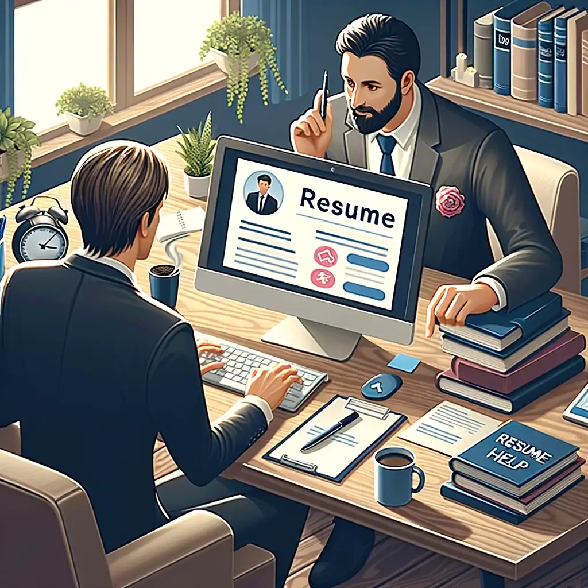

Blogs
Elevate Your Career: Expert Tips for Crafting the Perfect Digital Resume with OneCrate
In the fast-paced digital age, the job market is evolving rapidly, and so are the tools and strategies needed to navigate it successfully. One of the most crucial components of a successful job search today is a well-crafted digital resume. Gone are the days of mailing out paper copies of your CV; now, it's all about making a digital impression that stands out from the crowd. Welcome to the era of the digital resume, where your online presence can make or break your career prospects.
At OneCrate, we understand the challenges and opportunities that come with crafting a digital resume that truly captures your essence as a professional. With years of experience in the tech and career development industries, we've honed our expertise in helping individuals like you bridge the gap between technology and your career aspirations. Let us guide you through the process of creating a digital resume that not only showcases your skills and accomplishments but also tells your unique story in a compelling way.
Understanding the Digital Resume Landscape
In today's competitive job market, having a digital resume is no longer optional—it's essential. But what exactly is a digital resume, and why does it matter? Simply put, a digital resume is a digital version of your traditional resume, optimized for online viewing and sharing. This means it can include multimedia elements such as video introductions, project showcases, and links to online portfolios.
However, creating a digital resume isn't just about transferring your existing resume into a digital format. It's about understanding the unique requirements of the digital landscape, including the role of keywords and Applicant Tracking Systems (ATS) in resume screening. Keywords are specific terms or phrases related to your industry or job role that are used by ATS to filter and rank resumes. By strategically incorporating relevant keywords into your digital resume, you can increase your chances of getting noticed by recruiters and hiring managers.
Key Elements of a Winning Digital Resume
- Crafting a Compelling Personal Brand Statement: Your personal brand statement is like your elevator pitch—it's a concise summary of who you are as a professional and what you bring to the table.
- Highlighting Relevant Skills and Achievements: Use quantifiable metrics to showcase your accomplishments and demonstrate the impact you've made in previous roles.
- Incorporating Multimedia Elements: Don't be afraid to get creative with your digital resume. Consider including video introductions, project showcases, and links to online portfolios to give recruiters a more comprehensive view of your skills and experience.
- Optimizing for ATS: To ensure your resume gets past the initial screening process, be sure to strategically place relevant keywords and phrases throughout your digital resume.
- Ensuring Readability and Accessibility: Make sure your digital resume is easy to read and accessible across different devices and platforms. Avoid using overly complex formatting or design elements that may not translate well online.
Expert Strategies for Digital Resume Success
- Utilizing OneCrate's Free Resume Builder: Our free resume builder makes it easy to create a professional-looking digital resume in minutes. Simply choose a template, add your information, and customize it to fit your needs.
- Tailoring Resumes for Specific Job Roles and Industries: One size does not fit all when it comes to resumes. Be sure to customize your digital resume for each job application, highlighting the skills and experiences most relevant to the role.
- Leveraging Social Proof: Include recommendations, endorsements, and certifications to provide social proof of your skills and abilities.
- Keeping Content Concise and Impactful: Remember, recruiters and hiring managers are busy people. Keep your digital resume concise and to the point, focusing on the information that is most relevant to the job you're applying for.
- Staying Updated with Industry Trends: The job market is constantly evolving, so it's important to stay up-to-date with the latest industry trends and resume best practices.
Addressing Common Pitfalls and Challenges
- Overloading Resumes with Irrelevant Information: Keep your digital resume focused on the information that is most relevant to the job you're applying for. Avoid including extraneous details that could distract from your key qualifications.
- Neglecting to Customize Resumes: Don't make the mistake of sending out the same generic resume to every job application. Take the time to customize your digital resume for each position, highlighting the skills and experiences most relevant to the role.
- Failing to Proofread and Format Effectively: Typos and formatting errors can detract from the professionalism of your digital resume. Be sure to proofread carefully and format your resume in a way that is easy to read and visually appealing.
- Balancing Creativity with Professionalism: While it's important to stand out from the crowd, be mindful of maintaining a balance between creativity and professionalism in your digital resume. Avoid using overly gimmicky or unprofessional design elements that could detract from your credibility as a candidate.
In today's digital age, having a well-crafted digital resume is essential for success in the job market. By following the expert tips and strategies outlined in this article, you can create a digital resume that not only showcases your skills and accomplishments but also tells your unique story in a compelling way. With OneCrate's expertise and guidance, you'll be well on your way to unlocking new career opportunities and taking your professional journey to the next level. So what are you waiting for? Start crafting your perfect digital resume today and watch your career soar!
About One Crate

Las Vegas Lcoation 217 Las Vegas BLVD Las Vegas,NV 89101


https://www.onecrate.com
Informations
Please use the Online Resume Builder to Create Desired one if you need any specific details or required any epxert help feel free to contact us